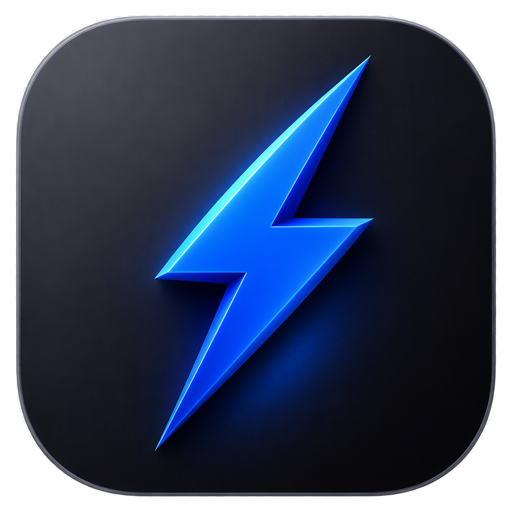

Рабочие пространства
Разделяйте вкладки для работы, учёбы и личных дел. Переключайтесь между проектами без хаоса.

Молния СкачатьБраузер с сертификатами Минцифры.
Красивый, приватный и готовый к российским сайтам - всё уже настроено.
Продуктивность в лучшем виде
Мы сохранили всё, за что вы любите Zen Browser: продуманный интерфейс, гибкую работу с вкладками и инструменты, которые помогают сосредоточиться.
Разделяйте вкладки для работы, учёбы и личных дел. Переключайтесь между проектами без хаоса.
Скрывайте боковую панель, когда она не нужна. Больше места для сайтов, меньше отвлечений.
Открывайте ссылки поверх текущей страницы, чтобы быстро посмотреть содержимое и вернуться назад.
Размещайте два сайта рядом в одном окне - удобно сравнивать, переводить и работать с источниками.
Сертификаты Минцифры
Корневой и промежуточный сертификаты Минцифры уже встроены. Госуслуги, банки и другие сайты с российскими сертификатами открываются без предупреждений и ручной настройки.
Наши принципы
Молния соединяет открытые технологии Zen и Mozilla с настройками, которые важны для рунета.
Исходный код и процесс пересборки доступны на GitHub. Основа - Zen Browser и Mozilla Firefox, лицензия MPL 2.0.
Русский язык и регион RU, поиск Яндекс и сертификаты Минцифры настроены заранее. Поисковик можно сменить.
Телеметрия и эксперименты отключены. Safe Browsing и обновления расширений остаются включёнными.
Бесплатно и с открытым кодом
Скачайте свежую сборку на GitHub. Для каждого релиза публикуются контрольные суммы SHA256.
Выберите свою систему - все сборки доступны на GitHub
Частые вопросы
У сборки пока нет платной подписи разработчика Microsoft, поэтому SmartScreen может показать предупреждение. Скачивайте Молнию только из нашего официального репозитория и проверяйте SHA256. Для запуска выберите «Подробнее» → «Выполнить в любом случае».
DMG имеет ad-hoc подпись, но не сертификат Apple Developer. Откройте приложение через контекстное меню: правый клик по «Молнии» → «Открыть» → ещё раз «Открыть». Скачивайте файл только из официальных релизов.
Телеметрия, эксперименты и отчёты отключены. Safe Browsing и проверки отзыва сертификатов остаются включёнными для вашей безопасности. Поиск по умолчанию - Яндекс: как и любой поисковик, он получает ваши поисковые запросы. Его можно сменить в настройках.
Это независимая пересборка официальных стабильных релизов Zen Browser на движке Firefox. Мы добавляем сертификаты Минцифры, русские настройки, Яндекс, uBlock Origin и детектор новых релизов, а также отключаем телеметрию и родной апдейтер.
Встроенный детектор покажет уведомление, когда на GitHub появится новая версия. Скачивание и установка остаются под вашим контролем: Молния не обновляет себя автоматически и не перезаписывает ваши файлы.